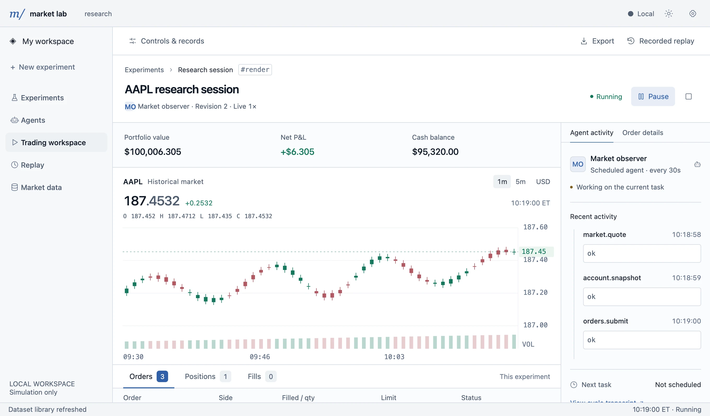

Controlled
Step & playbackAdvance market events yourself or use playback. Understand order behavior and check a human or rule decision against a known sequence.
See what it does.
Build an agent. Give it historical data and a simulated account. Inspect its decisions, orders and fills — then replay what happened.

See the workbench in action Desktop walkthrough · 1 min 11 secOne workbench connects your market, decision maker and account. Keep the evidence beside the experiment.
Choose a market recording, symbol, starting point and simulated account. Use a human, a built-in rule, your own model file or a saved Agent revision.
Set up an experimentInspect visible market data, cash, positions, orders and fills together. See Agent tool calls and their recorded results.
Understand executionCompare repeated Agent runs with people, rules and your own models on the same disguised market, with confidence intervals and tests. Replay any run without another model call.
Evaluate an AgentChoose the execution mode that answers your research question.
Explore execution modesAdvance market events yourself or use playback. Understand order behavior and check a human or rule decision against a known sequence.
Market time continues while the Agent reads, reasons or waits for a model. The Agent chooses when to use tools, wait or finish its work.
A real preparation, order, fill and verified Replay. Synthetic data. No paid model calls.
Install from source, add market data, prepare an experiment and inspect the results. Start with the App guide.
For App usersImplement create_agent(context), choose your model and tools, and import your Python project.
Go deeper: API reference · Source code map · Architecture
The demo uses a small synthetic recording and temporary accounts. Try manual trading and rule baselines before configuring a model.
V0.1 source setup targets macOS with Python 3.9–3.12, Make and a C++17 compiler.
Full installation instructionspython3 -m venv .venv
source .venv/bin/activate
pip install -r requirements-desktop.txt
make all
python -m sim_platform desktop --demoCurrent scope: simulated cash, limit and market orders, optional short selling; several symbols for manual and model-file experiments. Historical recordings are supplied separately. Market Lab does not connect to a broker or place real orders. Support & limitations